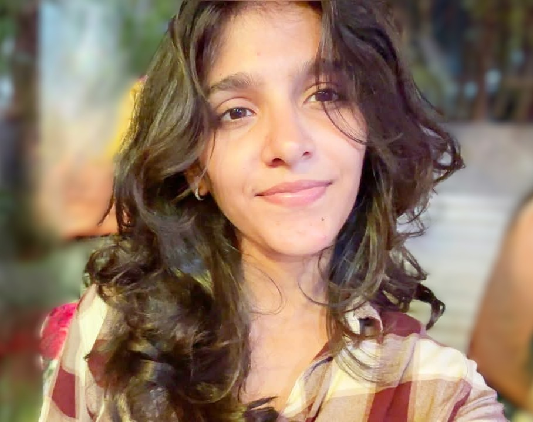

About me
Creative and enthusiastic undergraduate with hands-on experience in fundraising, marketing, content strategy and event management. I like talking to all kinds of audiences, making engaging materials, and working on projects with a team.
I’m interested in marketing, media, brand communication and creative strategy.
Education
B.Tech, Computer Science and Engineering (Data Science)
Currently learning
- Digital marketing: SEO, paid campaigns and online brand growth
- Content creation and storytelling for different platforms and audiences
- Brand strategy: how brands build an identity and connect with customers
- Market research: consumer behaviour, trends and audience preferences
- Video editing and creative production
Experience
Fundraising Intern @ Muskurahat Foundation
- Created fundraising templates and creatives to reach potential donors.
- Supported donor outreach through creative communication.
- Learned about audience engagement and cause-based marketing.
Marketing Intern @ Digital Gold Campaign (2 days)
- Promoted digital gold products at a marketing stall, talking to people face to face.
- Explained product details to a wide range of people.
- Got practical exposure to customer engagement and persuasion.
Content Strategist @ College Club
- Helped plan content and creative strategy for club activities.
- Came up with ideas to improve audience engagement and communication.
- Supported the club’s content and promotion.
Campus involvement & projects
Event management university-level event
- Part of the college event management team.
- Helped with coordination, teamwork and on-ground management.
Hackathons
- Collaborated on ideas and explored innovative solutions.
- Practised problem-solving, teamwork and project development.
Skills
Tools
Contact
- Email: nvmsez@gmail.com
- Instagram: @suniidhiixx
- Phone: 9811398871
